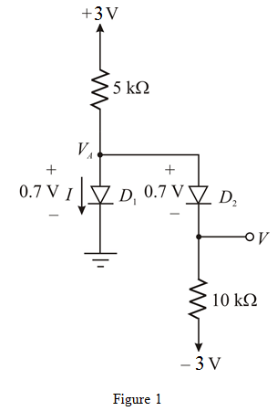
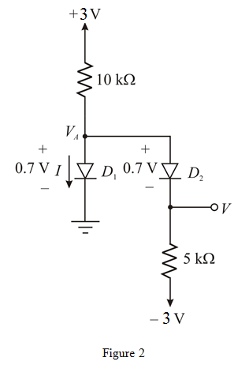
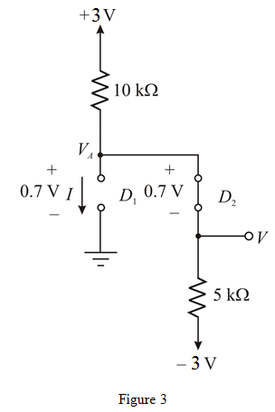

Apply the Kirchhoff’s voltage law across the diode  :
:
(a)
Refer to Figure P4.9 in the text book.
Redraw the circuit diagram as shown in Figure 1.
Consider the voltage drop across the diode is 0.7 V.

Apply the Kirchhoff’s voltage law across the diode :
Apply the Kirchhoff’s current law at node  .
.
Therefore, the value of the current  is .
is .
Calculate the voltage  by applying the Kirchhoff’s voltage law across the diode
by applying the Kirchhoff’s voltage law across the diode  :
:
Therefore, the value of voltage V is  .
.
(b)
Consider the following circuit diagram:

Consider both diodes are conducting.
Apply Kirchhoff’s voltage law across the diode  :
:
Apply Kirchhoff’s current law at node  .
.
Therefore, the value of current I is . This is wrong assumption because
not possible when the diodes are in ON condition.
Redraw the circuit as shown in Figure 3.
Consider  is OFF and
is OFF and  is ON:
is ON:

From the Figure 3, the value of current I is  (Since diode
(Since diode is open).
is open).
Apply the Kirchhoff’s current law at node  :
:
Apply Kirchhoff’s voltage law across the diode  :
:
Therefore the current I is  and the voltage V is .
and the voltage V is .